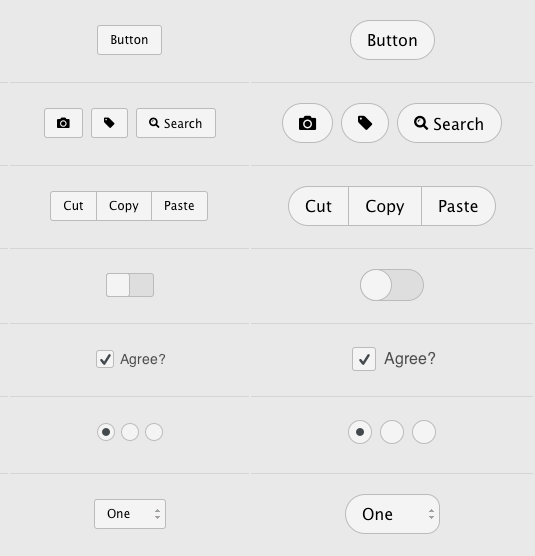

Skeleton theme | Editor Simon Luthi |
Index
The Skeleton theme is a very basic, neutral looking Montage theme. It has the following purposes:
Each component’s UI will have a Desktop and Mobile version
If available the API should be identical to standard elements defined by the W3C. This will allow developers to easier start using the Montage components without having to learn a new API. We might won’t implement everything in a first version, but it’s the goal.
To use the skeleton theme, the "module" path in the serialization has to be changed to "montage/ui/skeleton/xxx.reel".
Reel naming conventions:
Here a guide how to name CSS classes of components:
For the reasoning of this naming convention, see this discussion. In short: The goal was to make it easy to see the markup structure by just looking at the CSS name. It also has good usability because you can double-click each part to quickly edit them. And by using single selectors, it avoids name collisions.
Still work in progress:

The aim is to support as many browsers as possible, but will be determined during creation. Most likely it will be on a per component basis. Or we can group components depending on their browser support. If a component is not available in a certain browser, a developer could choose the following options:
I tested which of the native components can be used for Skeleton.. Made a screenshot. The order is Firefox, Opera, Chrome on OS X.
Chrome/Safari has this CSS property appearance: none that I'm using and it lets you remove the native look and restyle however you want. But it Firefox it seems too buggy and other browsers don't support it yet. Soo.. the conclusion is:
Kishore:
--------
With Montage Reels, every component is independent from each other. The only problem, the same CSS properties might get repeated many times. The opposite would be a more OOCSS approach: Trying to specify a CSS property once in a class and then give that class to whichever component needs it. It’s not really an issue for more advanced themes, but maybe for the Skeleton theme where all the components have the same basic look.
.button { background: silver; border: 1px solid gold; border-radius: 4px; }
.radio { background: silver; border: 1px solid gold; border-radius: 50%; }
.checkbox { background: silver; border: 1px solid gold; border-radius: 4px; }
<button class=”button”></button>
<input type=”radio” class=”radio”></input>
<input type=”checkbox” class=”checkbox”></input>
Pro:
.skeleton-bg { background: silver; }
.skeleton-border { border: 1px solid gold; }
.rounded-corners { border-radius: 4px; }
.circle { border-radius: 50%; }
<button class=”skeleton-bg skeleton-border rounded-corners”></button>
<input type=”radio” class=”skeleton-bg skeleton-border circle”></input>
<input type=”checkbox” class=”skeleton-bg skeleton-border rounded-corners”></input>
Pro:
Conclusion: I would say during development, we should start with the “Classitis” way, just because it makes it easy to tweak the styles globally. Then once we agree on a certain look, we’ll break it down and add it to each component individually. And about the problem with the file-size. I think it’s worse to load the whole package if you just need part of it, than have the ones you use repeated a couple times. And maybe MOP could create a sprite generator or something similar.[d]
More approaches:
.radio,
.button,
.checkbox,
..many more {
background: silver;
border: 1px solid gold;
}
Less repeating of same properties, but a huge list of selectors might be slower (needs testing)
[class^=”montage-action”] {
background: silver;
}
[class^=”montage-inputs”] {
background: white;
}
<button class=”montage-action-button”></button>
<input type=”radio” class=”montage-action-inputRadio”></input>
<input type=”text” class=”montage-inputs-inputText”></input>
<textarea class=”montage-inputs-textarea”></textarea>
Best of both worlds, but is slower and makes the class names even longer.
[a]fbnw74:
Seems like there is two different use cases. The first is a very minimal wireframe that only the bare minimum styling shows up, so there is almost nothing to override. The second is something a bit more involved style wise, that looks neutral but is still good enough looking to be used as is. I wonder if we can do this with one theme or if the second use case should be an additional theme that extends the first, adding ore fidelity like gradients and shadows, etc?
bfpv37:
I think that should be a second theme. Or just an extension. Probably just another CSS file that adds stuff like gradients, shadows and so. It would be great for developers/designers because they can do whatever their taste/style is.
[b]bfpv37:
Automatic could be the default. Other options for devs are: If they add a backup (think download link) we could just hide the element. Or show a warning.
[c]bfpv37:
At some point, preferably yes. But it could be done over time.
[d]fbnw74:
Another option would be something like:
.radio, .button, .checkbox { background: silver;
border: 1px solid gold;
}
.button, .checkbox { border-radius: 4px; }
.radio { border-radius: 50%; }
Eventually mix-ins will solve this in CSS, but there is some debate about adding this. Google are heavily in favour.
{kind=link}